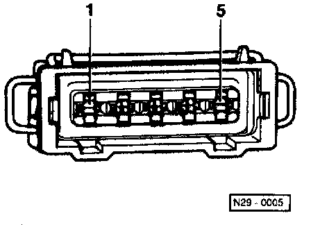
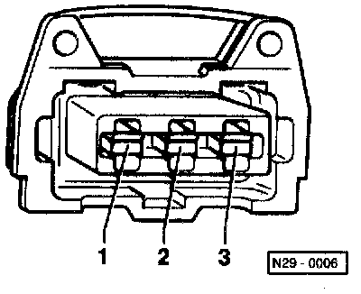
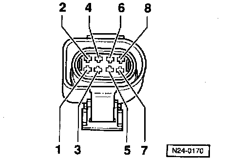

Figure References

Fig. 1 Resistance graph
The diagram is valid for Engine Coolant Temperature (ECT) sensor -G62- and Intake Air Temperature (IAT) sensor -G72-.
Scale A shows resistance values for temperature range 0-50°C (32-122°F) and scale 8 the values for temperature range 50-100°C (122-212°F).
Examples:
- 30°C (86°F) corresponds to a resistance from 1500-2000 Ohms
- 80°C (176°F) corresponds to a resistance from 275-375 Ohms

Fig. 2 Heated Oxygen Sensor (HO2S) -G39- connector pin assignment

Fig. 3 Connector terminal assignment for Heated Oxygen Sensor (HO2S) 2 -G108- after Three Way Catalytic Converter (TWC)
Connector housing only fits HO2S 2 (after three way catalytic converter).

Fig. 4 Camshaft Position (CMP) sensor -G40- connector terminal assignment

Fig. 5 Connector terminal assignment for ignition coil -N152-

Fig. 6 Knock Sensor (KS) 1 -G61- and Knock Sensor (KS) 2 -G66- connector terminal assignment

Fig. 7 Data Link Connector (DLC), connector terminal assignment
Between terminals 4 and 16, specification: Battery positive voltage (B+)

Fig. 8 Throttle valve control module -J338- connector terminal assignment

Fig. 9 Secondary Air Injection (AIR) pump relay -J299-
- With fuse
- Secured on left of bulkhead in engine compartment